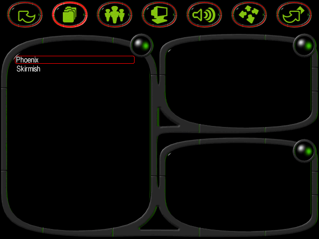
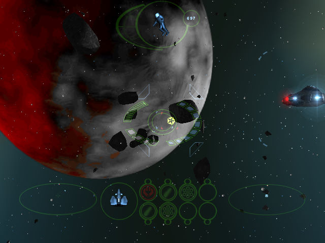

名稱：宇宙特警隊／鳳凰：深空復活 (Phoenix: Deep Space Resurrection，英文版)
簡介：Team17 1999年出品的太空飛行戰鬥模擬遊戲，由MicroProse代理發行。台灣由第三波
代理進口，但並未中文化 [待補]。


保護：光碟
備註：VirtualBox、Win64實機均無法執行，虛擬機請使用VMware，安裝nGlide，然後再使用
Voodoo Renderer。
備註：遊戲內定許多按鍵都是搖桿，沒有搖桿的玩家一開始要到control options裡修改。
檔案：Phoenix Patch 1.1.rar = 1.1更新檔